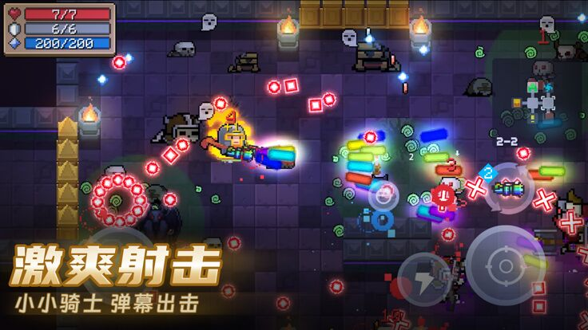
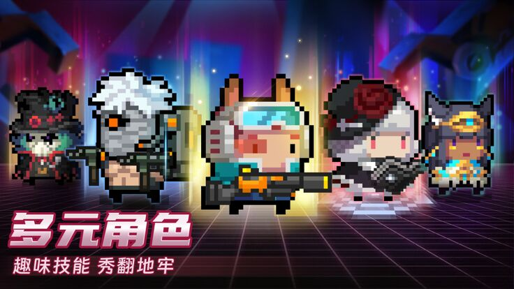
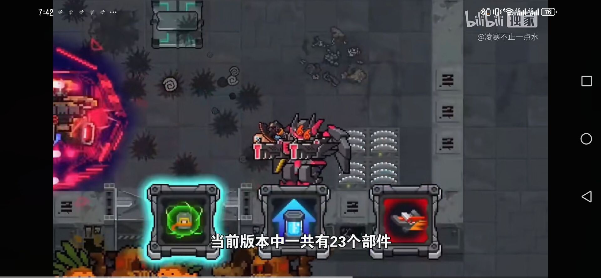
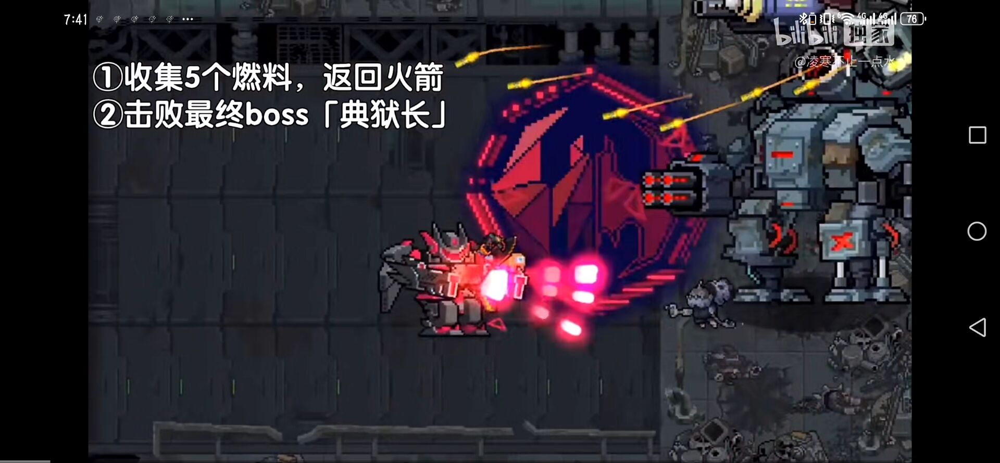
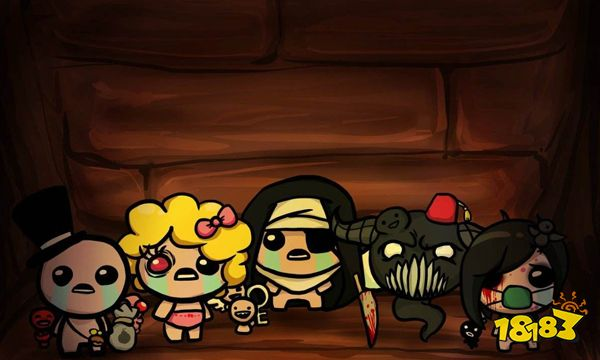

元气骑士及前传
肉鸽类+养成类1.游戏的趣味性：
元气骑士具有多种职业，每种职业有一个不同的技能，这也使得每种职业的通关过程不同。核心是元气骑士有多种多样的武器，有些武器致敬了一些动漫、游戏。游戏过程中还能遇到融合装置，用来融合同种武器，进而产生新的武器。元气骑士当然有收藏系统，那里可以找到你在游戏中使用过的武器。游戏过程本身则是打小怪与打BOSS的循坏，每次都有三个场景，每个场景对应不同的怪和BOSS，其种类丰富繁多。该游戏支持多人联机。2.游戏的挑战性：它具有养成因素，因为游戏的玩法是随着玩家的游玩而不断开启更新的，难度也不断上升，挑战关卡也会不断开启，游戏角色的属性也会不断提升，收集物也会不断增多。游戏的难度可以自由调试，如果想要追求挑战，则可以调高，如果玩得憋屈，可以调低。3.游戏的完整性：不管是核心玩法，还是收集养成，武器锻造，其制作都相当完整，自成体系。4.游戏的故事性：游戏故事十分简单。5.游戏的艺术性：元气骑士的艺术性主要体现在游戏音效，每种武器的配音各不相同，游戏的画面流畅，采用像素画风。游戏思想：简单、搞笑。相关游戏：《以撒的结合》